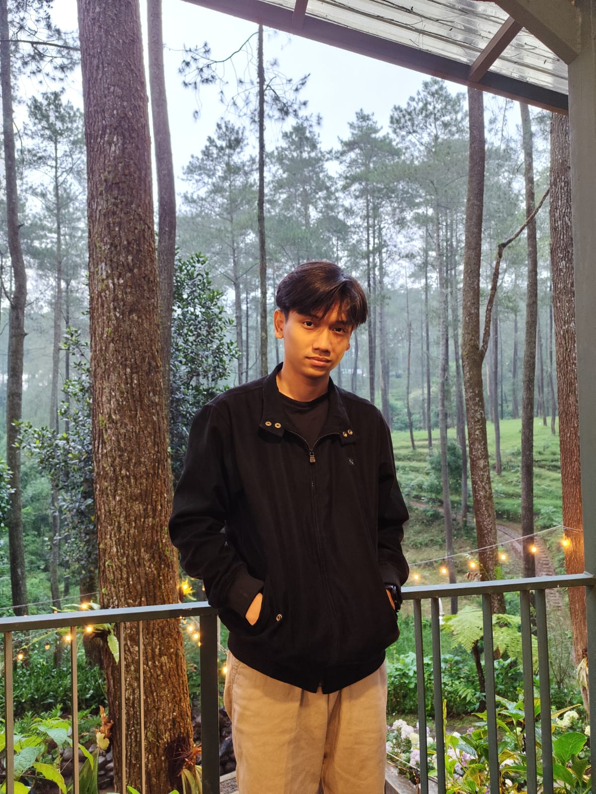
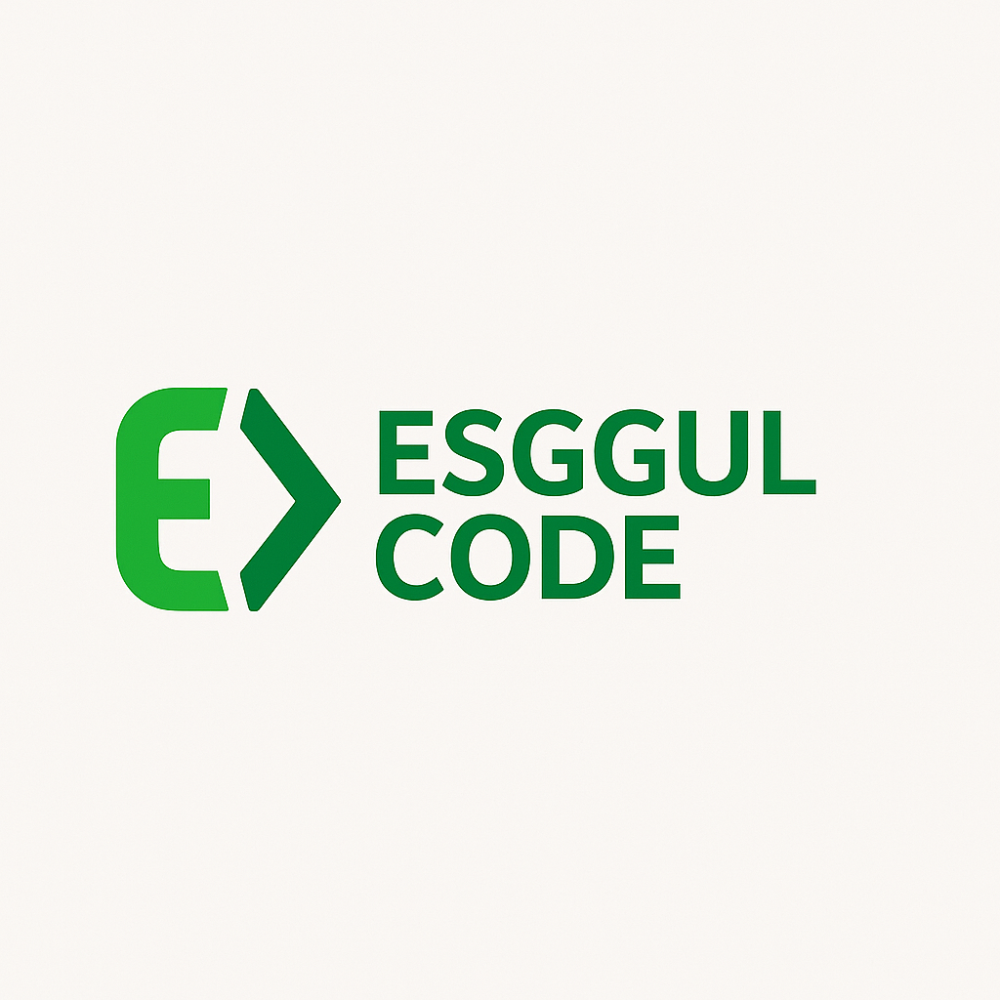
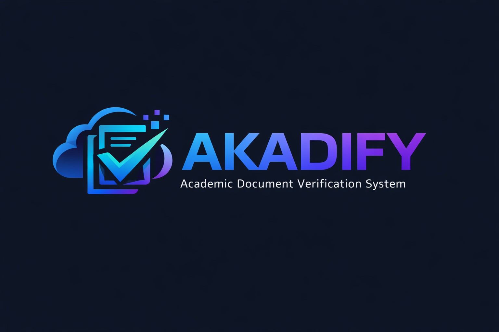
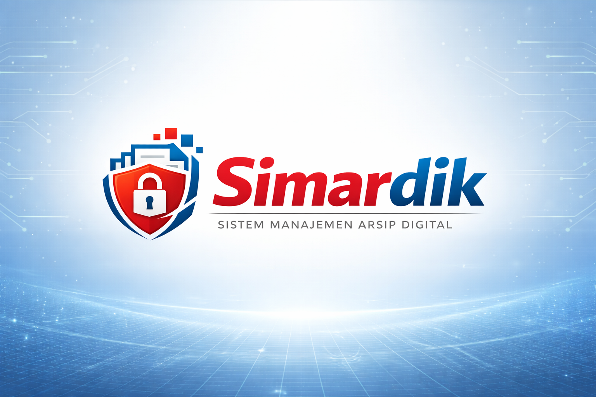
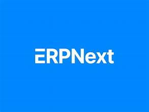
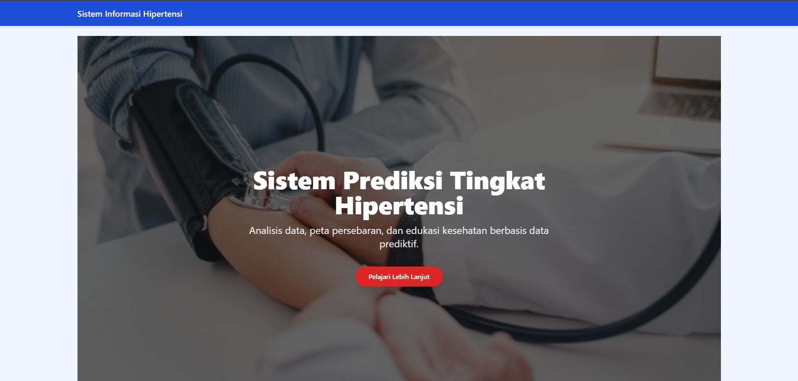
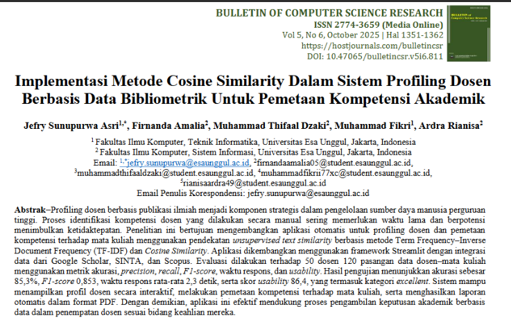

System Analyst · Data-Oriented Developer · Digital System Builder
I design structured digital systems by translating business logic into scalable technical solutions, supported by strong data handling, documentation, and system integration skills.
I am an Information Systems student with a strong focus on system analysis, data analytics, and digital solution design. I enjoy working at the intersection of business processes and technology—analyzing requirements, designing structured workflows, and implementing systems that are scalable, efficient, and well-documented.
My academic and project experience includes ERP implementation, ETL processing, API integration, OCR automation, and research-based system development. I am committed to continuous learning and contributing to data-driven and impact-oriented digital initiatives.
System analysis, data analytics, ERP, and digital system development.
Networking fundamentals, system maintenance, and technical basics.

Web-based bootcamp management system featuring HRM, LMS, salary calculation, and Midtrans payment integration.
Laravel · Filament · Livewire · Midtrans
Automated certificate upload and verification using OCR, n8n workflow, and WhatsApp notification integration.
Python · Tesseract · n8n · Docker
Secure digital archive system with file deduplication, role-based access, and document retention management.
Laravel · Filament · MariaDB · Docker
ERPNext CRM, Sales & Marketing configuration with Redis-based system integration.
ERPNext · Redis · UbuntuDesigned ETL workflows using Pentaho for operational analytics and data consistency.
Pentaho · ETLMobile app for pregnancy monitoring with GIS-based midwife locator and weekly health tracking.
Flutter · Python · FastAPI · GIS
Research project supporting spatial prediction modeling and data preprocessing for healthcare distribution.
Machine Learning · GIS · Streamlit
Co-author research project utilizing TF-IDF and Cosine Similarity for academic profiling.
Python · Streamlit · TF-IDFAcademic program planning and community service leadership.
Secretary, MC, and event coordinator for major religious events.
Customer handling, inventory, and daily sales reporting.